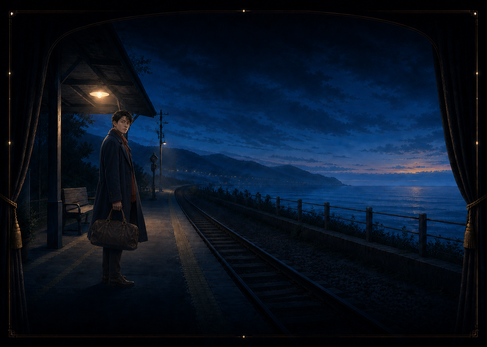
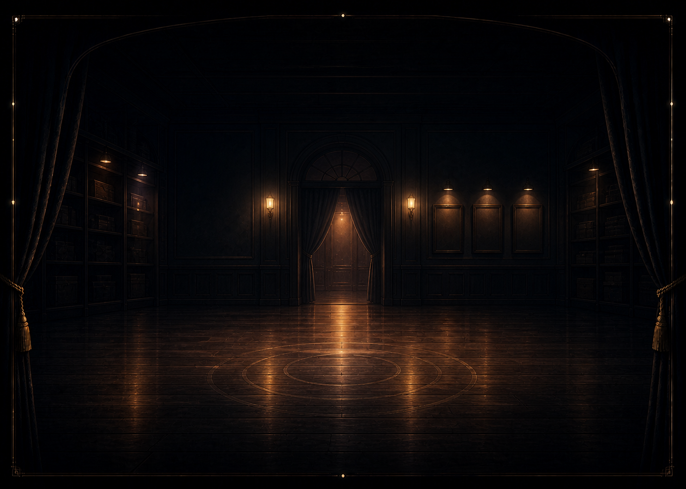
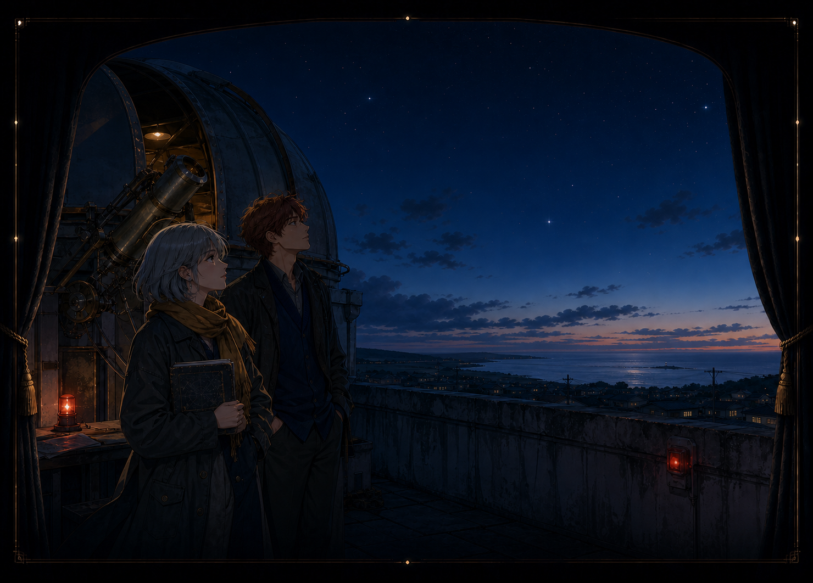

示例 01离岸之前
末班车到来前，一场关于记忆、遗忘和未说出口之事的对话。
试玩
本地视觉小说 · 播放器与剧目库
本地视觉小说启动器
选择一个含 game.json 的目录。回声剧场只解释声明式剧本，不执行游戏脚本。
用于体验播放器能力，不会自动启动。

示例 01末班车到来前，一场关于记忆、遗忘和未说出口之事的对话。
试玩
示例 02闭馆前的最后一夜，两个人用一封未寄出的信讨论意义是否需要抵达。
试玩